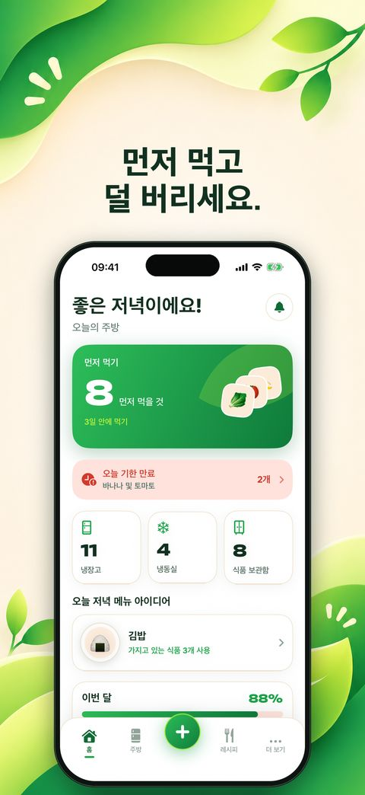
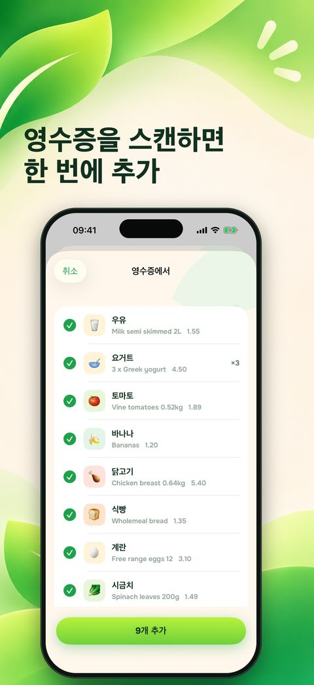
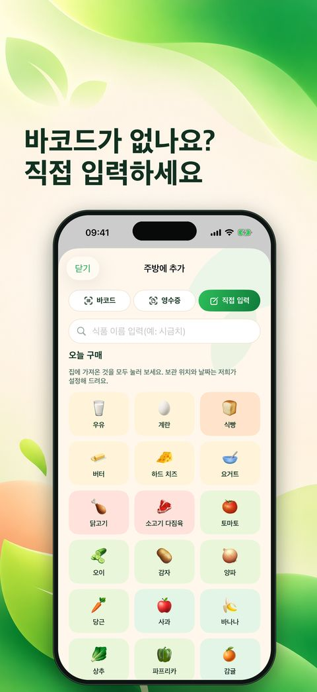
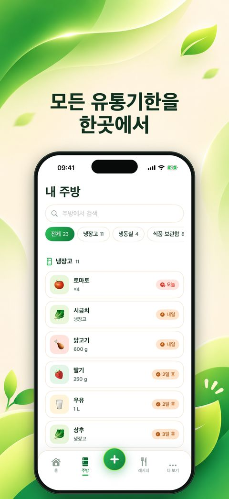
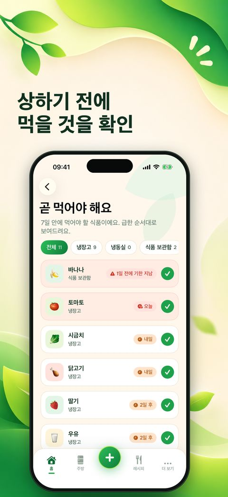
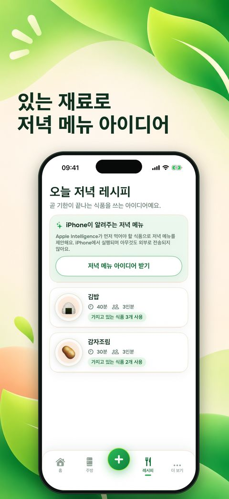
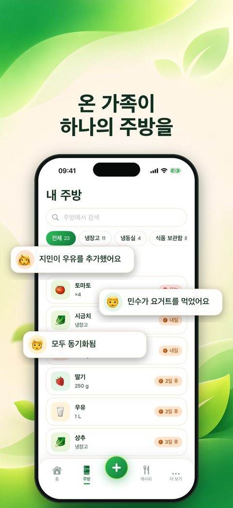

무엇부터 먹을지 알려드려요.
Frunio는 주방의 모든 식품을 기한과 함께 기록합니다. 곧 기한이 되는 것을 알려주어 버리기 전에 요리할 수 있게 하고, 가지고 있는 재료로 저녁 메뉴도 제안합니다.
App Store에서 다운로드
Frunio가 하는 일
식품을 추가하는 세 가지 방법
바코드를 스캔하거나, 영수증을 촬영해 장 본 것을 한 번에 추가하거나, 직접 입력하세요. 시장에서 산 식품에는 바코드가 없어요. 식품과 구매일을 고르면 Frunio가 보관 기간을 예상합니다. 기간은 식품 안전 표를 따르며 모든 날짜를 고칠 수 있습니다.
먼저 먹기
홈 화면과 위젯이 곧 써야 할 것을 보여주고, 기한 당일에는 잠금 화면에 카드가 나타나며, 하루 한 번의 알림이 여러 알림을 대신합니다.
온 가족이 하나의 주방을
링크로 가족을 초대하세요. 모두가 같은 냉장고와 식료품 보관함을 보고 각자의 iPhone에서 업데이트합니다. 계정을 만들 필요가 없고 중간에 저희 서버도 없습니다. 모든 동기화는 본인의 iCloud를 통해 이루어집니다.
도움이 되는 작은 기능
- 가지고 있는 재료로 만드는 저녁 메뉴 아이디어는 iPhone에서 만들어지며 아무것도 전송되지 않습니다.
- 영수증은 휴대폰에서 읽히고 밖으로 나가지 않습니다.
- 냉장, 냉동, 실온 보관과 개봉일 기록을 지원합니다.
- 20개 언어, 언어마다 현지 레시피가 있습니다.
안을 들여다보기






먼저 써보세요
먼저 내 식품을 추가해 보세요. Frunio Plus는 3일 무료로 시작하며, 결제 전에 가격을 보여주고 체험이 끝나기 하루 전에 알려드립니다. 중단해도 데이터는 남아 있고 계속 읽을 수 있습니다.
App Store에서 다운로드